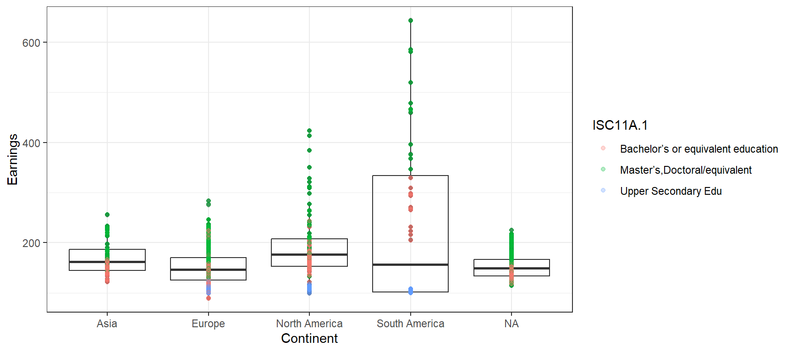
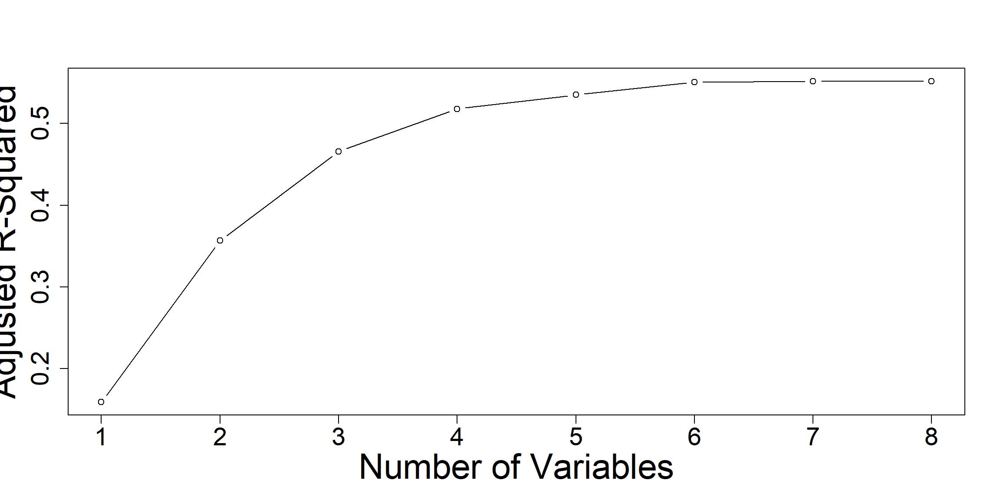
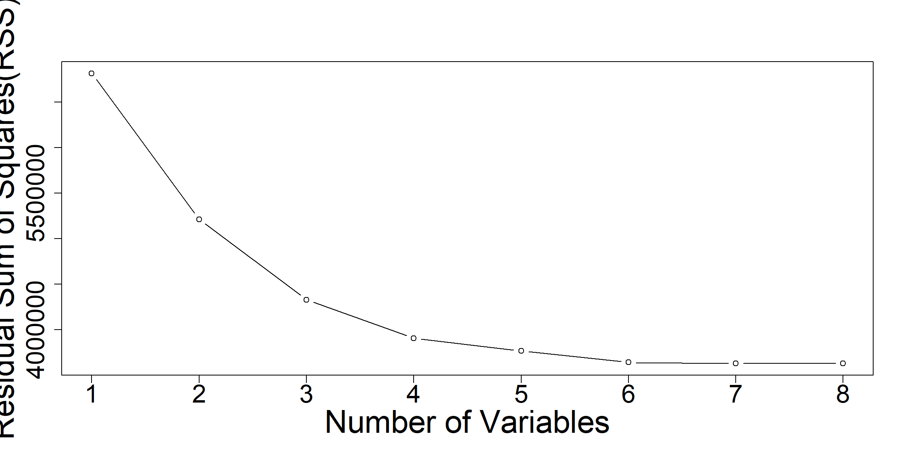
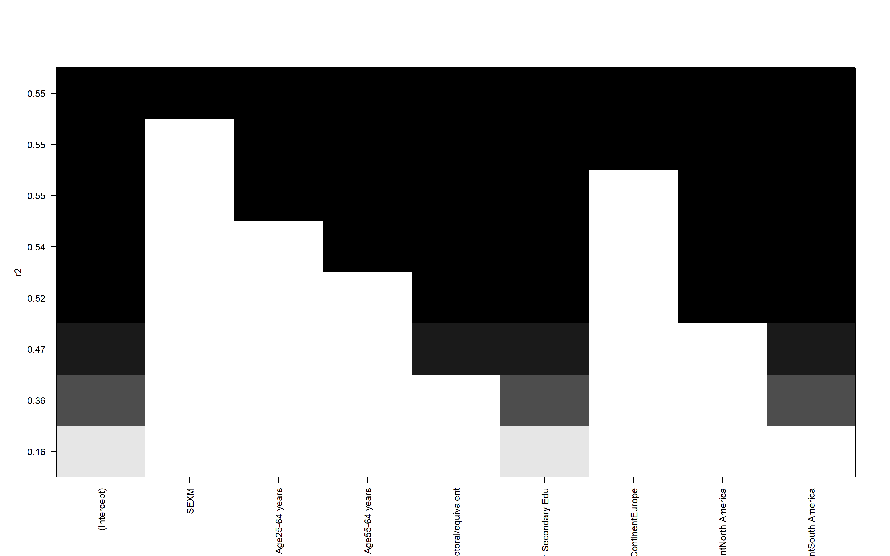
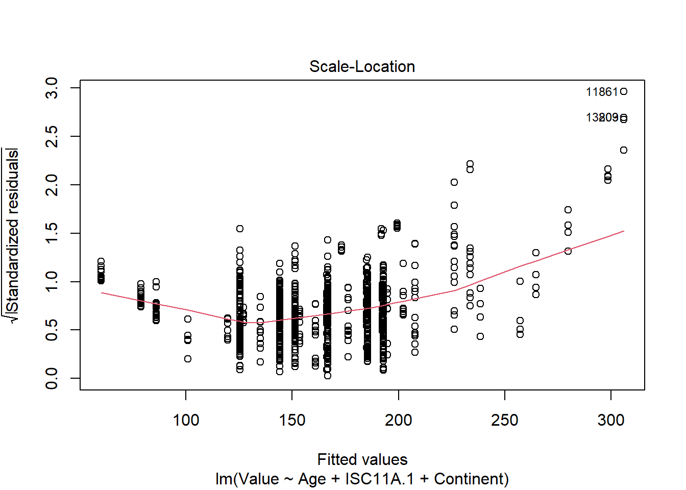

As someone who has considered pursuing a higher level of education, I often wonder how much this will enhance my work earnings, not only in the United States, but across the world. For this project I am exploring the strength of the linear relationship between wages and age, sex, country, and level of education. I created a Multiple Regression Model to predict how my income will change if I move to another continent, and how my income in those different continents shifts when my education level changes from a bachelor’s to a masters or doctorate. The goal is to be able to recognize how different countries value education by calculating those differences. The predictors are age, sex, country, and level of education, while wage is the response.
The null and alternate hypothesis for the F-statisic are as follows:
\[\begin{aligned} & H_0:\beta_1 = \beta_2 = \ldots = \beta_i = 0 \\ & H_A: \beta_1 \neq 0 \text{ OR } \beta_2 \neq 0 \text{ OR } \ldots \text{ OR } \beta_i \neq 0 \\ &(\text{At least one } \beta_i \neq 0) \\ \\ & \text{ Written meaning:} \\ \\ & H_0: \text{There is no statitsical association between the predictors and the response} \\ & H_A: \text{There is some statitsical association between at least one of the predictors and the response} \end{aligned}\]The Organisation for Economic Co-operation and Development(OECD) is the data source I retrieved my information from. Countries that are part of the organization have governments committed to democracy and the international market economy. The original data came from Education at a Glance, a source that tracks data on education around the world.
One important variable to understand about my data set is how the predictor, income, is presented. Since this data encompasses all OECD countries, wage levels are calculated by dividing low and high pay. Low pay is the share of workers that earn less than two thirds of median wage while high pay is the share of workers that earn more than one and a half of median wage.
All of my predictor variables are categorical. The sex is a qualitative, nominal variable assigned as male and female. Age is ordinal and is in groups set at 25-34, and 55-64. Education level is also an ordinal and categorical with variables, upper secondary education(equivalent to high school degree in the U.S.), bachelor’s or equivalent education, and master’s, doctoral or equivalent education. One important change I made to the data set was adding a column of continents. Since understanding the data strictly by country there are too many variables, and adding continents made it easier to understand big picture differences. Categorizing by continent also gave me the opportunity to visualize the data neatly.

Figure 1 *NA is Oceania and islands
As expected, the higher your level of education is, the higher your earnings are on average. None of the predictors taken from this source are dependent on one another, so there is no double counting within the model. No predictors are correlated with one another, but some are individually correlated with the response.
My null hypothesis under the F-statistic is that there is no statistical association between age, level of education, continent and wage. The alternate hypothesis under the F-statistic is there is at least one variable out of age, level of education, and continent with statistical association to wage. My null hypothesis and alternate hypothesis is the same idea as the F-statistic, but instead compares each individual variable rather than at least one.
I split my data where 70% is in the training set, while the other 30% is in the test set. For my model I have the goal of prediction, so the hierarchical rule does not apply, and since we are using a multiple regression model, we do not need to worry about any violation of normality. Since variables are independent, lack co linearity, and do not have any influential outliers, all assumptions have been validated and the final regression model is suitable for prediction.
Using backward step-wise selection I removed variables that did not have as high of p-values than others. This resulted in me taking out levels of education that are equivalent to Middle and Elementary grades in the U.S. One result I was surprised to see was that sex negatively affected the accuracy of the model, so I chose to remove it as well.
The total number of variables that resulted in the lowest Adjusted R-Squared was the model with 7 predictor variables. You can see in the Adjusted R-Squared plot and the Residual sum of squares plot that 7 variables is when the model’s accuracy stops growing.

Figure 2, 3
In Figure 2 and 3 the model is taking the 7 best predictors and showing their influence on the accuracy of the model using Adjusted R-Squared and the Residual Sum of Squares.

Figure 4
Ultimately the predictors that gave me the most accurate model were age, level of education, and location. You can see the predictor’s significance visually in Figure 4 and quantitatively in the model summary in Figure 5.
##
## Call:
## lm(formula = Value ~ Age + ISC11A.1 + Continent, data = educvarstrain)
##
## Residuals:
## Min 1Q Median 3Q Max
## -99.33 -20.67 -4.08 17.08 337.61
##
## Coefficients:
## Estimate Std. Error t value Pr(>|t|)
## (Intercept) 134.955 4.182 32.274 < 2e-16 ***
## Age25-64 years 18.661 2.409 7.746 1.73e-14 ***
## Age55-64 years 26.063 2.465 10.572 < 2e-16 ***
## ISC11A.1Master’s,Doctoral/equivalent 41.316 2.157 19.156 < 2e-16 ***
## ISC11A.1Upper Secondary Edu -65.311 3.180 -20.538 < 2e-16 ***
## ContinentEurope -9.534 4.026 -2.368 0.018 *
## ContinentNorth America 31.414 4.741 6.626 4.79e-11 ***
## ContinentSouth America 103.620 5.780 17.928 < 2e-16 ***
## ---
## Signif. codes: 0 '***' 0.001 '**' 0.01 '*' 0.05 '.' 0.1 ' ' 1
##
## Residual standard error: 38.73 on 1500 degrees of freedom
## (760 observations deleted due to missingness)
## Multiple R-squared: 0.5426, Adjusted R-squared: 0.5405
## F-statistic: 254.2 on 7 and 1500 DF, p-value: < 2.2e-16Figure 5
The result from the summary of my model in Figure 5 includes a F-statistic p-value of < 2.2e-16 which immediately indicates that there is some statistical association between at least one of the predictors and the response. I reject the null hypothesis in favor of the alternate. The same applies for each individual predictor variable. After performing backward-stepwise selection, each variable has some statistical association with wage. The adjusted R-squared is lower than ideal at 0.5855 meaning that 59% of variation of age, education, and continent, can be explained by the linear association with wage. This result is to be expected since we are predicting for 5 continents. When we eventually focus on one specific area, the result is more accurate since there is less variability in the data.
The residual standard error is 38.73 on 1500 degrees of freedom, meaning we can expect our prediction to be off by an average 38.73 percentage points. This error is not bad, in the context of the problem, since we are evaluating values ranging from 88% to 650%.
To identify outliers in the model, we refer to the Scale-Location plot in Figure 6.

Figure 6
The outliers in this model are both from Chile. These two points have master’s and doctoral as their level of education with age 55-64 years, where the only difference is sex. The first is data point 11861, which is the farthest outlier, is female. Slightly below is data point 13809 which is the same in all variables except the sex is male. The earnings were 644% and 586%. When viewing the highest wages of the data set as a whole, these points are some of the highest. In fact, all the highest wages are in Chile. Upon further research I can now see that Chile has an extremely high poverty rate, and their income distribution is large, so it would make sense that a master’s or doctorate is valued the most in terms of earnings in Chile. Since these outliers do not lie within Cook’s Distance they are not highly influential points, and I see no reason to remove them.
The calculated root mean squared error(RMSE) is 47%. This was found by using the test set to calculate the difference between the predicted income vs actual income, then squaring the difference, taking the mean, and then finally taking the square root.
Since I want to predict what my own potential salary could be if I went from a bachelor’s to a master’s, or doctorate, I created a separate model for North America, South America, Europe, and Asia. This will allow me to see which continents value that extra level of education the most.
##
## Call:
## lm(formula = Value ~ ISC11A.1 + Age + SEX, data = na_datatrain)
##
## Residuals:
## Min 1Q Median 3Q Max
## -109.465 -21.173 -6.682 18.078 178.781
##
## Coefficients:
## Estimate Std. Error t value Pr(>|t|)
## (Intercept) 152.863 7.595 20.128 < 2e-16 ***
## ISC11A.1Master’s,Doctoral/equivalent 67.040 7.370 9.096 < 2e-16 ***
## ISC11A.1Upper Secondary Edu -60.301 10.674 -5.649 5.78e-08 ***
## Age25-64 years 28.621 8.077 3.544 0.000496 ***
## Age55-64 years 24.025 8.700 2.761 0.006317 **
## SEXM 1.015 6.866 0.148 0.882579
## ---
## Signif. codes: 0 '***' 0.001 '**' 0.01 '*' 0.05 '.' 0.1 ' ' 1
##
## Residual standard error: 48 on 191 degrees of freedom
## (29 observations deleted due to missingness)
## Multiple R-squared: 0.4929, Adjusted R-squared: 0.4796
## F-statistic: 37.12 on 5 and 191 DF, p-value: < 2.2e-16## fit lwr upr
## 1 152.8626 57.0108 248.7145## fit lwr upr
## 1 219.9028 123.8995 315.906Figure 7
see Data Preparation to interpret income percent
Figure 7 has an Adjusted R-squared 48%, meaning 48% of variation in sex, age, and education can be explained by its linear association with earnings in North America. This score is the lowest of the continents because of the level of variation in the data, which you can see when predicting how large the earnings interval is.
I am 95% confident that if I, a female, worked in North America and am between 25-34 years old with a bachelor’s or equivalent, my income would be between 57% and 249%. This is a huge range of values that your income could be! The 57% is the lowest wage percentage you will see, meaning if you get a Bachelors in North America you have a fairly high chance of getting an income on the lower side. This makes me believe that the countries do not value the Bachelor’s degree as much as other countries in the world. However if everything were the same, except my level of education was instead a Master’s or Doctoral equivalent, my income would be between 123% and 315%.
Achieving a high level of education such as a masters or doctoral definitely gives someone better odds of earning a higher wage. The difference of expected wage between the bachelors and masters or doctorate, is a 66% increase in earnings.
##
## Call:
## lm(formula = Value ~ ISC11A.1 + SEX + Age, data = sa_datatrain)
##
## Residuals:
## Min 1Q Median 3Q Max
## -82.564 -26.277 -2.118 26.337 133.926
##
## Coefficients:
## Estimate Std. Error t value Pr(>|t|)
## (Intercept) 237.770 10.366 22.937 < 2e-16 ***
## ISC11A.1Master’s,Doctoral/equivalent 201.919 11.027 18.311 < 2e-16 ***
## ISC11A.1Upper Secondary Edu -165.662 9.509 -17.422 < 2e-16 ***
## SEXM -10.716 7.825 -1.369 0.173950
## Age25-64 years 36.606 9.553 3.832 0.000222 ***
## Age55-64 years 69.953 9.532 7.339 5.82e-11 ***
## ---
## Signif. codes: 0 '***' 0.001 '**' 0.01 '*' 0.05 '.' 0.1 ' ' 1
##
## Residual standard error: 40.08 on 100 degrees of freedom
## (95 observations deleted due to missingness)
## Multiple R-squared: 0.9385, Adjusted R-squared: 0.9354
## F-statistic: 305.2 on 5 and 100 DF, p-value: < 2.2e-16## fit lwr upr
## 1 237.7702 155.6429 319.8975## fit lwr upr
## 1 439.689 357.5779 521.8001Figure 8
The adjusted R-squared of Figure 8 is 94%, the highest linear association of all the models!
I am 95% confident that if I worked in South America and am between 25-34 years old with a bachelor’s or equivalent, my income would be between 156% and 319%. This is a major increase in earnings compared to North America. If the predictors remained constant, except my level of education was instead a Master’s or Doctoral equivalent, my income would be between 358% and 522%.
A higher level of education such as a masters or doctoral practically guarantees a higher wage. This makes intuitive sense because South America, a less developed country than the rest in comparison, has a high demand for people with higher levels of education. Having a bachelors versus masters or doctorate results in an average of 202% earnings increase.
##
## Call:
## lm(formula = Value ~ ISC11A.1 + SEX + Age, data = eur_datatrain)
##
## Residuals:
## Min 1Q Median 3Q Max
## -52.612 -14.503 -2.598 10.431 99.941
##
## Coefficients:
## Estimate Std. Error t value Pr(>|t|)
## (Intercept) 129.0472 1.5252 84.610 < 2e-16 ***
## ISC11A.1Master’s,Doctoral/equivalent 31.9781 1.4134 22.625 < 2e-16 ***
## ISC11A.1Upper Secondary Edu -36.6337 2.0589 -17.793 < 2e-16 ***
## SEXM -0.2218 1.3161 -0.169 0.866
## Age25-64 years 13.2513 1.5949 8.308 2.86e-16 ***
## Age55-64 years 22.4434 1.6405 13.681 < 2e-16 ***
## ---
## Signif. codes: 0 '***' 0.001 '**' 0.01 '*' 0.05 '.' 0.1 ' ' 1
##
## Residual standard error: 21.72 on 1087 degrees of freedom
## (217 observations deleted due to missingness)
## Multiple R-squared: 0.5762, Adjusted R-squared: 0.5743
## F-statistic: 295.6 on 5 and 1087 DF, p-value: < 2.2e-16## fit lwr upr
## 1 129.0472 86.32016 171.7743## fit lwr upr
## 1 161.0253 118.2977 203.7529Figure 9
Figure 9 has an adjusted R-squared of 57%, a lower association than we would prefer but still relevant.
I am 95% confident that if I worked in Europe and am between 25-34 years old with a bachelor’s or equivalent, my income would be between 86% and 172%. This interval does not guarantee as good of a wage with a bachelors than South America does. However if everything were the same except my level of education was instead a master’s or doctoral, my income would be between 118% and 204%.
Obtaining a high level of education such as a master’s or doctoral definitely gives someone better odds of earning a higher wage, but does not guarantee it. The difference of expected wage between the bachelors and masters or doctorate, is a 32% increase in earnings.
##
## Call:
## lm(formula = Value ~ ISC11A.1 + SEX + Age, data = asia_datatrain)
##
## Residuals:
## Min 1Q Median 3Q Max
## -26.363 -15.552 -4.274 11.445 44.057
##
## Coefficients:
## Estimate Std. Error t value Pr(>|t|)
## (Intercept) 130.547 3.819 34.184 < 2e-16 ***
## ISC11A.1Master’s,Doctoral/equivalent 50.062 3.450 14.509 < 2e-16 ***
## SEXM -12.118 3.453 -3.510 0.000669 ***
## Age25-64 years 26.768 4.149 6.452 3.76e-09 ***
## Age55-64 years 35.889 4.249 8.447 2.18e-13 ***
## ---
## Signif. codes: 0 '***' 0.001 '**' 0.01 '*' 0.05 '.' 0.1 ' ' 1
##
## Residual standard error: 17.83 on 102 degrees of freedom
## (44 observations deleted due to missingness)
## Multiple R-squared: 0.7403, Adjusted R-squared: 0.7301
## F-statistic: 72.68 on 4 and 102 DF, p-value: < 2.2e-16## fit lwr upr
## 1 130.5466 94.37123 166.7219## fit lwr upr
## 1 180.6081 144.4603 216.756Figure 10
The adjusted R-Squared in Figure 10 is 76%, meaning there is a strong linear association between the predictors and the response.
I am 95% confident that if I worked in Asia and was between 25-34 years old with a bachelor’s or equivalent, my income would be between 93% and 163%. If everything were the same, except my level of education was a master’s or doctoral equivalent, my income would be between 146% and 216%.
Achieving a high level of education such as a masters or doctoral gives someone much better odds of earning a higher wage. The difference of expected wage between the bachelor’s and master’s or doctorate, is a 53% increase in earnings.
Predicting income on a national level is something my model offers over perhaps a more standard model focused in one area. I wanted to see the big picture on a global scale, and this model encompasses countries whose population totals to about 1.38 billion people. One additional bonus that I did not expect to come out of my model was the fluctuation of the p-value of sex in Figures 7-11. Europe, North America, and South America had higher p-values meaning sex plays less of a role in wages. However Asia had a p-value below .05 meaning, being female vs male plays a major role in a person’s earnings. These models expose a lot about country’s development as well as factors they value in the workforce. These would be ultimately benefit any person who wants to travel and/ or is thinking about pursuing a higher level of education.
“Chile Overview.” World Bank, https://www.worldbank.org/en/country/chile/overview.
“Education and Earnings .” OECD, https://stats.oecd.org/Index.aspx?DataSetCode=EAG_EARNINGS.
```r
library(tidyverse)
library(mosaic)
library(knitr)
library(tinytex)
library(leaps)
library(knitr)
knitr::opts_chunk$set(echo = TRUE)
knitr::opts_chunk$set(message = FALSE)
knitr::opts_chunk$set(warning = FALSE)
knitr::opts_chunk$set(out.width = "50%")
educvars <- read.csv("C:\\Users\\maete\\OneDrive\\Documents\\Website and Blog\\education_earnings.csv")%>%
subset(select = -ISC11A)%>%
subset(select = -AGE)%>%
subset(select = -COUNTRY)%>%
subset(select = -INDICATOR)%>%
subset(select = -MEASURE)%>%
subset(select = -Measure)%>%
subset(select = -YEAR)%>%
subset(select = -Year)%>%
subset(select = -Unit.Code)%>%
subset(select = -Unit)%>%
subset(select = -PowerCode.Code)%>%
subset(select = -PowerCode)%>%
subset(select = -Flag.Codes)%>%
subset(select = -Flags)%>%
subset(select = -Reference.Period.Code)%>%
subset(select = -Gender)%>%
subset(select = -Indicator)%>%
subset(select = -EARN_CATEGORY)%>%
subset(select = -EARN_CATEGORY.1)%>%
subset(SEX!="T")%>%
subset(ISC11A.1 != "Below upper secondary education")%>%
subset(ISC11A.1 != "Tertiary education")%>%
subset(ISC11A.1 != "Short-cycle tertiary education")%>%
subset(ISC11A.1 != "Bachelor's, Master’s, Doctoral or equivalent education")%>%
subset(ISC11A.1 != "Post-secondary non-tertiary education")
educvars$ISC11A.1[educvars$ISC11A.1 == "Upper secondary, post-secondary non-tertiary education and short-cycle tertiary education"]<- "Upper Secondary Edu"
educvars$ISC11A.1[educvars$ISC11A.1 == "Master’s, Doctoral or equivalent education"]<- "Master’s,Doctoral/equivalent"
north_america<- c("United States", "Canada", "Costa Rica", "Mexico")
south_america<-c("Chile", "Colombia", "Dominican Republic", "Ecuador", "El Salvador","Panama","Paraguay", "Brazil")
europe<- c("Austria", "Belgium", "Czech Republic", "Denmark","Estonia","Finland", "France", "Germany", "Greece","Hungary", "Iceland","Ireland","Italy","Latvia","Lithuania","Luxembourg","Netherlands","Norway", "Poland","Portugal", "Slovakia","Slovenia","Spain","Sweden","Switzerland", "Turkey", "United Kingdom", "Luxembourg")
asia<- c("Israel", "Japan","South Korea", "Singapore","Thailand", "Malaysia", "Cambodia", "Korea", "Türkiye")
attach(educvars)
educvars$Continent[Country %in% north_america]<-"North America"
educvars$Continent[Country %in% europe]<-"Europe"
educvars$Continent[Country %in% south_america]<-"South America"
educvars$Continent[Country %in% asia]<-"Asia"
detach(educvars)
#Seperating Each Data Set by Continent
na_data<-educvars%>%
subset(Continent == "North America")
sa_data<-educvars%>%
subset(Continent == "South America")
eur_data<-educvars%>%
subset(Continent == "Europe")
asia_data<-educvars%>%
subset(Continent == "Asia")
set.seed(101)
sample <- sample.int(n=nrow(educvars),size=floor(0.7*nrow(educvars)),replace=FALSE)
educvarstrain <- educvars[sample,]
educvarstest <- educvars[-sample,]
# model1<-lm(Value~SEX+Age+ISC11A.1+Country, data=educvars)
# summary(model1)
#
# model2<-lm(Value~Country, data=educvars)
# summary(model2)
#
# model3<-lm(Value~Age, data=educvars)
# summary(model3)
#
# model4<-lm(Value~ISC11A.1, data=educvars)
# summary(model4)
#
# model5<-lm(Value~SEX, data=educvars)
# summary(model5)
summary(educvars)
ggplot(data=educvars,aes(x=Continent,y=Value)) +
ylab("Earnings")+
geom_jitter(width=0,height=0.1,alpha=0.3) +
geom_boxplot(alpha=0)+
geom_point(alpha=.3, aes(color=ISC11A.1))+
theme_bw()
choosing<-regsubsets(Value~SEX+Age+ISC11A.1+Continent, data=educvars, nvmax=10, method="backward")
choosing.summary<-summary(choosing)
plot(choosing.summary$rsq, xlab = "Number of Variables", ylab="Adjusted R-Squared", type="b", cex.axis=1.8, cex.lab=2.5)
plot(choosing.summary$rss, xlab = "Number of Variables", ylab = "Residual Sum of Squares(RSS)", type="b", cex.axis=2, cex.lab=2.5)
#which.max(choosing.summary$adjr2)
plot(choosing, scale = "r2", cex.axis=2.5, cex.lab=2.5)
model6<-lm(Value~Age+ISC11A.1+Continent, data=educvarstrain)
summary(model6)
#summ(model6)
plot(model6, which=3)
test_predict1 <- educvarstest %>%
mutate(prob=predict(model6,newdata=educvarstest,type='response'))
test_predict1 %>%
summarize(accuracy=sqrt(mean((prob-Value)^2, na.rm=TRUE)))
#using na_data
set.seed(101)
sample <- sample.int(n=nrow(na_data),size=floor(0.7*nrow(na_data)),replace=FALSE)
na_datatrain <- na_data[sample,]
na_datatest <- na_data[-sample,]
model7<-lm(Value~ISC11A.1+Age+SEX, data=na_datatrain)
summary(model7)
#plot(model7)
predict(model7, newdata=data.frame(SEX="F", Age = "25-34 years", ISC11A.1="Bachelor’s or equivalent education"), interval="prediction", level=.95)
predict(model7, newdata=data.frame(SEX="F", Age = "25-34 years", ISC11A.1="Master’s,Doctoral/equivalent"), interval="prediction", level=.95)
# ggplot(data=na_data,aes(x=Country,y=Value)) +
# geom_jitter(width=0,height=0.1,alpha=0.2) +
# geom_boxplot(alpha=0)+
# geom_point(alpha=.3, aes(color=ISC11A.1))+
# theme_bw()
#using sa_data
set.seed(101)
sample <- sample.int(n=nrow(sa_data),size=floor(0.7*nrow(sa_data)),replace=FALSE)
sa_datatrain <- sa_data[sample,]
sa_datatest <- sa_data[-sample,]
model8<-lm(Value~ISC11A.1+SEX+Age, data=sa_datatrain)
summary(model8)
predict(model8, newdata=data.frame(SEX="F", Age = "25-34 years", ISC11A.1="Bachelor’s or equivalent education"), interval="prediction", level=.95)
predict(model8, newdata=data.frame(SEX="F", Age = "25-34 years", ISC11A.1="Master’s,Doctoral/equivalent"), interval="prediction", level=.95)
set.seed(101)
sample <- sample.int(n=nrow(eur_data),size=floor(0.7*nrow(eur_data)),replace=FALSE)
eur_datatrain <- eur_data[sample,]
eur_datatest <- eur_data[-sample,]
model9<-lm(Value~ISC11A.1+SEX+Age, data=eur_datatrain)
summary(model9)
predict(model9, newdata=data.frame(SEX="F", Age = "25-34 years", ISC11A.1="Bachelor’s or equivalent education"), interval="prediction", level=.95)
predict(model9, newdata=data.frame(SEX="F", Age = "25-34 years", ISC11A.1="Master’s,Doctoral/equivalent"), interval="prediction", level=.95)
set.seed(101)
sample <- sample.int(n=nrow(asia_data),size=floor(0.7*nrow(asia_data)),replace=FALSE)
asia_datatrain <- asia_data[sample,]
asia_datatest <- asia_data[-sample,]
model10<-lm(Value~ISC11A.1+SEX+Age, data=asia_datatrain)
summary(model10)
predict(model10, newdata=data.frame(SEX="F", Age = "25-34 years", ISC11A.1="Bachelor’s or equivalent education"), interval="prediction", level=.95)
predict(model10, newdata=data.frame(SEX="F", Age = "25-34 years", ISC11A.1="Master’s,Doctoral/equivalent"), interval="prediction", level=.95)
```Copyright © 2016 Skynet, Inc. All rights reserved.